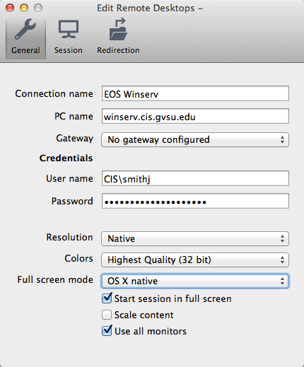

Winserv¶
Part of the department infrastructure is a Windows Server installation, called Winserv. Accounts for this machine are given as necessary — for example, when taking a course that involves projects which require the Windows platform. This server is named winserv.cis.gvsu and can be accessed via the Remote Desktop Protocol (RDP). The following are methods for accessing Winserv from various RDP clients.
Common Settings¶
Regardless of the RDP client or platform you use, please remember a few things:
- The machine’s IP address may change; use the DNS name instead.
- If outside of the EOS network, you will need to use the fully qualified domain name, winserv.cis.gvsu.edu. While on the EOS network, you can simply use winserv.
- You must login to the CIS domain. For instance, if your username is smithj, your login would be CIS\smithj. These may be specified together with the backslash or separately depending on your client.
- Our certificate is self-signed. You may want to instruct your client to save this information, or you will have to accept a security warning each time you login.
Microsoft Windows¶
All versions of Windows have the built-in Microsoft Terminal Services Client. You can find this program by searching for mstsc or Remote Desktop Connection in the Start Menu. Here is a sample configuration for Winserv:

Mac OS X¶
Multiple options exist for Mac OS X, including the official Microsoft client and an open-source client called CoRD. Both work well and provide a similar set of features, so it is up to you which one you’d like to use. See here for a comparison of three different options including the two just mentioned.
Microsoft Remote Desktop¶
This application is available as Microsoft Remote Desktop in the Mac App Store. Do not attempt to download Microsoft Remote Desktop Connection Client for Mac 2.1.1, as it does not work for more recent versions of Mac OS X. You do not need to configure a gateway in order to use this client with Winserv. Here is a sample configuration:

GNU/Linux¶
GNU/Linux systems usually have the xfreerdp command-line tool in their repositories. If not, it can most likely be built from source. xfreerdp provides a geometry flag that accepts both screen percentages or resolutions from the command-line to help adjust the client to an appropriate size. For instance, to allow the client to take up 90% of your screen:
xfreerdp winserv.cis.gvsu.edu -g 90%
Alternatively, to force a resolution of 1024x768 pixels:
xfreerdp winserv.cis.gvsu.edu -g 1024x768
For a graphical RDP client that can also be used for VNC, check out Remmina.